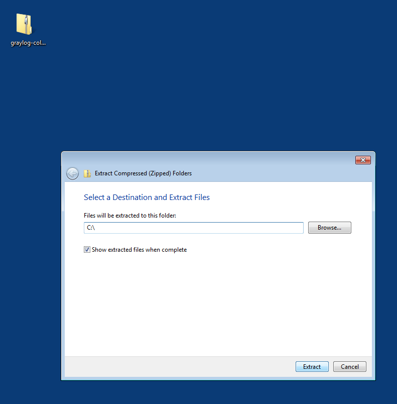

Getting Messages In¶
Linux, Unix and OS X¶
The easiest way to get logs into Graylog without deploying anything is to configure your syslog server to send logs to Graylog directly.
Note: If you aren’t running the appliance, you may want to check that your syslog input is configured.
Update (R)Syslog configuration¶
Simple Config
Run the following commands:
$sudo sh -c "echo '*.* @127.0.0.1:5140' >> /etc/rsyslog.conf"
$sudo service rsyslog restart
For Unix and OS X Log Sources:
$sudo sh -c "echo '*.* @127.0.0.1:5140' >> /etc/syslog.conf"
Restart your syslog service (will vary depending on OS)
For other log sources, such as syslog-ng please check out our marketplace(link)
Custom Config
Go to the /etc directory, and use vi, vim (CheatSheet), or the editor of your choice to modify the /etc/rsyslog.conf file. There are excellent resources on the web for rsyslog configuration.
At the bottom of the file, add the following so messages will forward to the local Graylog server:
$:*.* @127.0.0.1:5140
In case you wanted to know, @ means UDP, 127.0.0.1 is localhost, and 5140 is the port (514 is the default port for syslog but if you don’t have root access, you will need to use a port >1024).
Restart rsyslog
Type:
$sudo service rsyslog status
$sudo service rsyslog restart
Quick Collector Deployment¶
Note:Requires the GELF input plugin to be enabled
- Download the latest collector release. (find download links in the collector repository README)
- Unzip collector tgz file to target location
- cp
config/collector.conf.exampletoconfig/collector.conf - Update server-url in collector.conf to correct Graylog server address (required for registration)
- Update file input configuration with the correct log files
- Update outputs->gelf-tcp with the correct Graylog server address (required for sending GELF messages)
Note:The collector will not start properly if you do not set the URL or the correct input log files and GELF output configuration
Windows¶
Note:: Requires the GELF input plugin to be enabled
You need to have Java >= 7 installed to run the collector.
Download a release zip file from the collector repository README. Unzip the collector zip file to target location.
Change into the extracted collector directory and create a collector configuration file in config\collector.conf.
The following configuration file shows a good starting point for Windows systems. It collects the Application, Security, and System event logs.
Replace the <your-graylog-server-ip> with the IP address of your Graylog server.
Example:
server-url = "http://<your-graylog-server-ip>:12900/"
inputs {
win-eventlog-application {
type = "windows-eventlog"
source-name = "Application"
poll-interval = "1s"
}
win-eventlog-system {
type = "windows-eventlog"
source-name = "System"
poll-interval = "1s"
}
win-eventlog-security {
type = "windows-eventlog"
source-name = "Security"
poll-interval = "1s"
}
}
outputs {
gelf-tcp {
type = "gelf"
host = "<your-graylog-server-ip>"
port = 12201
}
}
Start a cmd.exe, change to the collector installation path and execute the following commands to install the collector as Windows service.
Commands:
C:\> cd graylog-collector-0.2.2
C:\graylog-collector-0.2.2> bin\graylog-collector-service.bat install GraylogCollector
C:\graylog-collector-0.2.2> bin\graylog-collector-service.bat start GraylogCollector